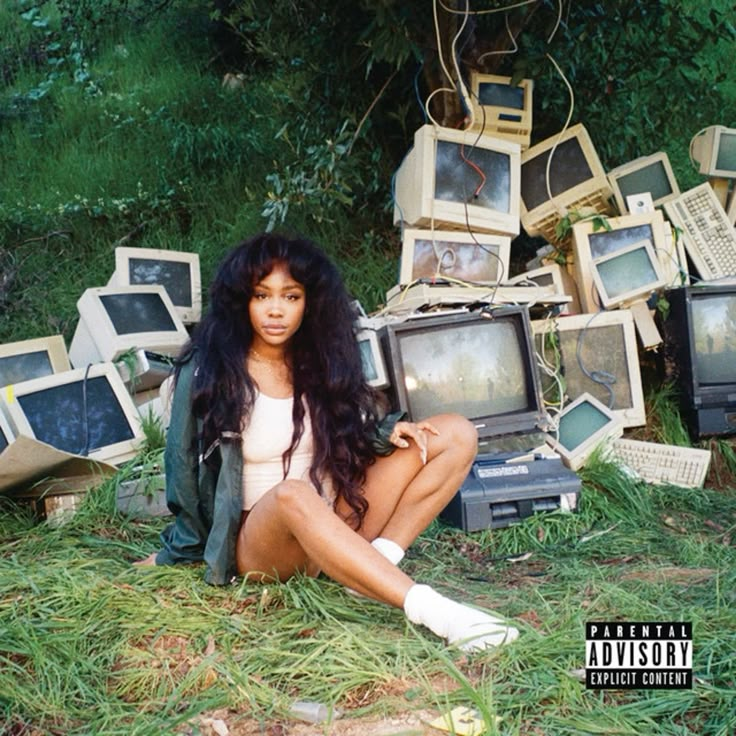

Top 6 melhores artistas musicais da atualidade
Uma visão melhor sobre os artistas
Veja mais de Daniel Caesar
Veja mais de 21Savage
Veja mais de Laufey
Veja mais de Faye Webster
Veja mais de SZA
Veja mais de Billie Eilish
Ir para o fim
Daniel Caesar

Artista de R&B com uma sonoridade suave e emocional, focada em temas como amor, espiritualidade e relações humanas.
21Savage

Rapper conhecido pelo estilo direto e frio, com letras que falam sobre a realidade da vida nas ruas e experiências pessoais.
Laufey

Mistura jazz clássico com pop atual, criando músicas suaves e românticas que parecem saídas de outra época, mas com um toque jovem.
Faye Webster

Tem um estilo indie tranquilo e meio nostálgico, com músicas calmas que falam de sentimentos de forma simples e sincera.
SZA

Conhecida por suas letras sinceras sobre amor, insegurança e identidade, ela traz um R&B moderno, com muita personalidade e autenticidade.
Billie Eilish (a maioral)

Uma artista que quebrou padrões do pop com um estilo mais sombrio e intimista. Suas músicas misturam vulnerabilidade emocional com produções modernas e minimalistas.
Veja a biografia de cada artista
Daniel Caesar
21Savage
Laufey
Faye Webster
SZA
Billie Eilish
Fim
Nota:O conteúdo do site é mera opinião da autora, que por fins diversos não assume responsabilidade pelas opiniões aversas do leitor.